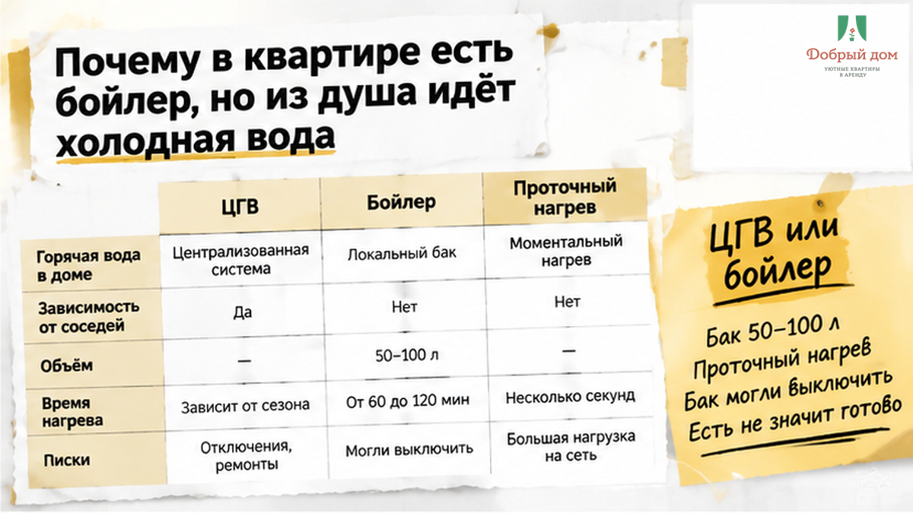
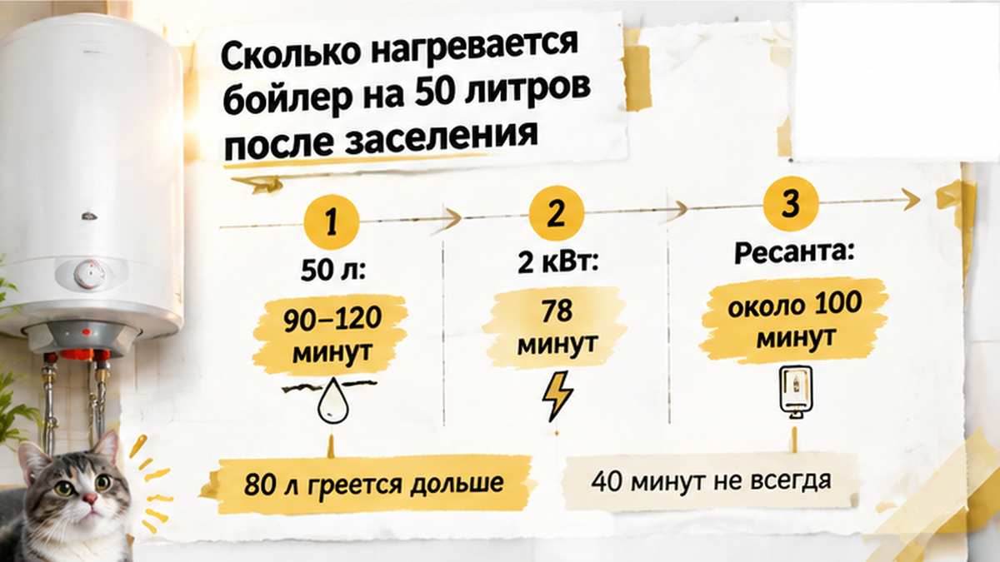
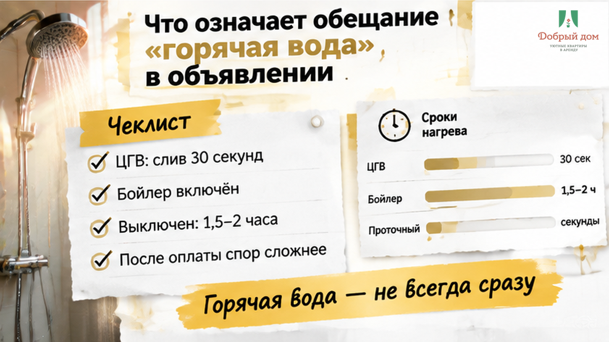
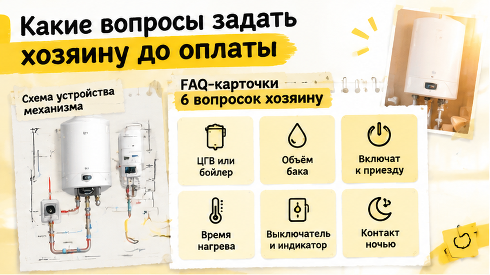

«Вода холодная. Совсем холодная. Бойлер у вас включён вообще?» — такое сообщение гость отправил через восемь минут после входа в квартиру. Он ехал полдня, поставил сумку и пошёл в душ. Из крана шла вода, от которой немеют руки.
В объявлении было написано: «горячая вода есть». В переписке это подтвердили: «есть, бойлер». Но душ пришлось отложить на 90 минут — пока пятидесятилитровый бак нагреет воду с нуля.
90 минут — не обязательно наглость хозяина и не обязательно поломка. Это физика накопительного водонагревателя. Проблема в том, что гостю заранее не объяснили, откуда берётся горячая вода и будет ли она готова сразу.
Я хост посуточной в Тюмени. Это «Добрый дом».

Горячая вода в квартире приходит одним из трёх способов.
При центральном горячем водоснабжении достаточно открыть кран и слить застоявшуюся воду. Примерно через полминуты она становится горячей.
Накопительный электрический бойлер — это бак на 50, 80 или 100 литров с нагревательным элементом. Если бак уже нагрет, душ доступен сразу. Если холодный — нужно ждать полного нагрева.
Проточный водонагреватель греет воду во время протока, поэтому ждать не нужно. Но при слабом напоре или недостаточной мощности полноценного душа может не получиться.
С накопительным бойлером холодный душ не всегда означает поломку. Между выездом прошлого гостя и вашим заездом бак могли выключить: пустая квартира не расходует горячую воду, а держать воду горячей сутками — лишние киловатты. Хозяин мог включить его заранее, за двадцать минут до приезда или забыть включить вообще.
Формально никто не врёт: бойлер есть и может работать. Просто в момент заселения в баке ещё холодная вода.

Стандартный бойлер на 50 литров с ТЭНом мощностью 1,5 кВт нагревает полный холодный бак примерно за 90–120 минут. При мощности 2 кВт расчёт даёт около 78 минут.
Для бытового накопительного нагревателя Resanta на 50 литров и 1,5 кВт указано около 100 минут до нагрева воды до 75 °C.
Бак на 80 литров при той же мощности будет греться дольше — ближе к двум с половиной часам. Точное время зависит от объёма, мощности, исходной температуры воды и установленной температуры нагрева.
Поэтому «сорок минут — и будет горячая» не универсально. За сорок минут вода может нагреться, если бак уже был частично тёплым, ТЭН мощнее или хозяин назвал оптимистичный срок. С холодным баком на 50 литров честный ориентир — час-полтора и больше.
Бывает и наоборот: сначала вода горячая, а через пару минут заканчивается. Бак мог нагреться частично или его объёма недостаточно для двух человек подряд. Как ведёт себя квартира, где горячая вода кончается на второй минуте душа — отдельная история с похожей причиной.

Само по себе — не так много. Обычно это означает, что в квартире есть техническая возможность получить горячую воду. Но не объясняет, откуда она приходит, включён ли бойлер и сколько ждать после полного расходования бака.
За одной фразой могут скрываться три сценария:
После оплаты спорить сложнее. Хозяин скажет: «Вода есть, бойлер работает, подождите» — и технически может быть прав.
До оплаты спросите: «Горячая вода будет именно в момент моего заселения?» Если заезд поздний, лучше получить ответ письменно. Это тот же механизм, что в ситуации когда в объявлении написано «горячая вода есть», а из душа идёт лёд и сорок минут нагрева.

Десять коротких вопросов уберут почти весь риск холодного душа в первую ночь.
Последний вопрос важен: ночью проблема бывает не только в бойлере, но и в отсутствии человека на связи.
С доступом в подъезд такая же история: когда код прислали, а домофон молчит двадцать минут — как в кейсе когда код прислали от чужой двери, спасает не сама инструкция, а понятный канал связи.
Переспросите конкретно: «Бойлер будет включён к моему приезду — да или нет?» Если ответа снова нет, остановитесь до оплаты. Возможно, хозяин не знает состояние бойлера или не хочет обещать срок.
Если вы уже в Тюмени и нужен нормальный ответ по технике, напишите нам в Telegram — https://t.me/Dobriy_dom_72. Мы отвечаем по состоянию воды и техники конкретно, без «всё работает».
Сохраните скриншот объявления с пунктом про горячую воду, свой вопрос о бойлере и ответ хозяина. Оставьте в переписке договорённость о времени заселения и контакт, по которому обещали отвечать ночью.
После входа при необходимости сфотографируйте панель бойлера с индикатором, а если есть термометр — и его. Это не набор для скандала: так через два часа не придётся доказывать словами, что именно вам обещали.
Сначала проверьте очевидное. Не ремонтируйте бойлер самостоятельно и не начинайте с претензии.
Откройте именно горячий кран и дайте воде стечь около минуты. Найдите выключатель бойлера: это может быть кнопка на корпусе, автомат в щитке или розетка за стиральной машиной. Посмотрите на индикатор. Если лампа нагрева горит, бак может просто набирать температуру.
Через 30 минут проверьте кран снова. Если вода стала теплее, это похоже на штатное ожидание; до полного нагрева может оставаться ещё час и больше.
О неисправности сообщайте, если индикатор не загорается, через час вода остаётся холодной, из бойлера капает или выбивает автомат. Хозяину лучше написать: «Бойлер не греет, индикатор не горит, что делаем?»
Есть и третий вариант: техника исправна, но квартира не та. Инструкция заселения привела не в тот подъезд — и гость пытается разобраться с чужим бойлером в чужой квартире. Сначала проверьте адрес и номер квартиры.
В карточке квартиры указываем, центральное ГВС или бойлер, а при наличии бойлера — объём бака. До заселения включаем его заранее, а не за двадцать минут до приезда.
В инструкции есть фото выключателя и индикатора. Гостю не нужно искать кнопку в темноте. На ночь оставляем канал связи, где отвечает человек.
Инструкцию отправляем до заселения. Детали можно уточнить менеджеру в MAX.
Это не гарантия от всех поломок: техника иногда выходит из строя. Но гость понимает, чего ждать, и знает, куда написать.
Наш вывод простой. «Горячая вода есть» — ещё не ответ на вопрос, будет ли она горячей сразу после заезда.
Если вода от бойлера, до оплаты уточните объём бака и будет ли он включён к вашему приезду. С холодного бака на 50 литров вода может нагреваться 90–120 минут. Это обычный технический сценарий, а не обязательно обман.
Сорок минут — удачный случай, а не правило.
Если нужна посуточная квартира в Тюмени, где про воду и технику говорят честно до оплаты, бронируйте: добрыйдом-72.рф/booking.
Или звоните: +7 993 574-83-22.